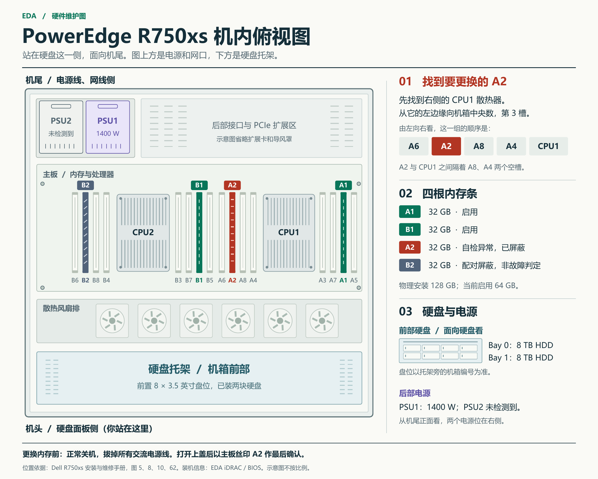

服务器一到中高负载，GitLab 就卡：一次从应用到内存通道的排查
我的 GitLab 跑在一台同时承担 FPGA 回归测试的双路 Dell PowerEdge R750xs 上。这台机器轻载时，打开项目页没什么问题；测试任务增多、服务器进入中高负载后，点开项目页经常要等两秒以上，有时连 SSH 都变慢。等负载降下来，访问又恢复了。
我想解决的不是「某个编译工具能开几路」，而是：同一台服务器在跑计算任务时，怎样让 GitLab 还保持正常响应？这次最后用原来的四根内存换了两个槽位，恢复了 128 GB；重新施加计算负载后，没有复现之前的明显卡顿。
1. 轻载正常，为什么中高负载下会卡？
最初我按 GitLab 自身故障排查，检查了容器健康状态、Puma、数据库和仓库服务。把 GitLab 调整到当时实测更快的 CPU 插槽一侧，网页确实好一些，但负载重新上来时，卡顿还会回来。尤其是网页和 SSH 一起变慢，很难用 Puma 的线程数解释整个现象。
后来把复现过程固定下来：先暂停计算任务测基线，再施加一种负载，最后停掉负载看是否恢复。每次探测同一个 GitLab 页面，记录 HTTP 状态和实际耗时。纯 CPU 脚本把整机 CPU 占用推到约 40%，没有稳定复现明显卡顿；Vivado 或布局布线这样的实际任务却能复现。
所以这里讲的「中高负载」，不是说 CPU 超过某个百分比就会卡。计算任务还会访问缓存、内存和磁盘资源；全机平均 CPU 占用率，也不等于 GitLab 所在的 NUMA 节点还有足够余量。清文件缓存曾带来短时改善，但不等于找到了根因。真正值得继续追的是：实测两侧 NUMA 节点表现不同，而且硬件自检有内存告警。
2. 自检指向内存，先恢复服务再做对照
这台机器原来是 4 根 32 GB DDR4-3200 ECC RDIMM。iDRAC 的开机自检最初在 A2 记录了 0x52D2，提示重新插紧 DIMM。我先屏蔽 A2、B2，只留 A1、B1，用 64 GB 维持服务。但这样跑正式回归，容量很快就会成问题。
接着我在断电后把 A2、B2 的两根内存互换，A1、B1 不动。重启后重新启用两个槽，并等 iDRAC 刷新清单，用序列号确认确实交换了位置。结果不是「A2 不报、B2 报」，而是 两个槽都出现了新的 0x52D2。开机自检停在 F1 提示，继续启动后系统仍只有 64 GB。
这一步没能把故障单独归到某根条或某个槽。排查时也要分清两件事：BIOS 设置里是 Enabled，不代表内存训练通过；iDRAC 记录里有告警，也要核对是不是本次启动新增的。比如此前人为屏蔽时的 0xA103，就不能和这轮的 0x52D2 混在一起判断。
3. 不换内存条，换槽后恢复了 128 GB


下一次正常关机并断开电源后，我仍保留 A1、B1 不动，把当时位于 A2 和 B2 的两根分别移到 A3、B3。开机后核对了三处：
- BIOS：识别到 128 GB，运行在 3200 MT/s。
- iDRAC：A1、A3、B1、B3 各 32 GB，序列号证明搬过去的是原来的两根，本次自检没有新增内存或插法告警。
- Linux：两个 NUMA 节点各有两根在线内存，系统可见总量约 125.2 GiB；核对时，四根的可纠正和不可纠正 ECC 错误计数都为 0。
同一批内存搬到另一组槽后能用，原 A2/B2 的槽位、对应通道或接触状况更值得优先查。但重新插拔、重新训练和可用容量恢复都发生在这次操作中，不能据此断定原插槽已经损坏，更不能从一次开机判断具体是哪一项造成了之前的响应变慢。
这不是 R750xs 的通用插法。戴尔手册列出的双路四条顺序是 A1、B1、A2、B2，并要求两颗 CPU 的配置匹配。跳过 A2/B2 是这台机器实测可用的临时方案，不保证同型号、不同 BIOS 或不同内存规格的机器也能这样插。参见戴尔 R750xs 内存安装顺序。
4. 恢复容量后，再看带负载时的 GitLab
开机没报错只是第一步。为了复测「计算任务和 GitLab 同时工作」的场景，我暂停正式回归，起了 16 路 Vivado，用已布线的 checkpoint 做时序分析和生成 bitstream。测试约两分钟。同一台局域网电脑访问同一个项目首页，结果如下：
- 空载基线：9 次请求，中位数 0.115 秒。
- 并发测试期间：44 次请求，中位数 0.126 秒，最慢 0.334 秒，全都返回 HTTP 200。
- 恢复正式回归后：调度器曾达到 20 路；随后在实测 17 路时另做 5 次页面探测，最慢 0.189 秒。
这些是页面 HTTP 请求耗时，不含浏览器渲染。16 路是时序分析和码流生成，不是 16 个大型设计同时从综合跑到布线；而且不能把 17 路时的抽测当作 20 路时的性能数据。能确定的是：在这几次带真实计算负载的观察里，没有再出现原先那种秒级卡顿。
遇到类似问题，可以按这个顺序排
- 用同一个页面测轻载和带负载的响应，把卡顿与具体时间、并发数和任务类型对上。
- 网页和 SSH 一起慢时，除了查 GitLab，也查宿主机的 CPU 等待、内存压力、磁盘等待和 NUMA 差异。不要用一个全机 CPU 占用率下结论。
- 发现内存告警时，看本次 POST 的事件，记录内存条和槽位；换槽前正常关机、拔电源，换槽后核对 BIOS 容量和 Linux 在线容量。
- 维护结束后，用之前会触发问题的实际工作负载复测。轻载恢复、开机通过和带负载仍流畅，是三个不同的验收条件。
这次真正有效的做法，是把问题分成两部分验证：先确认机器的内存配置恢复正常，再确认计算任务回到服务器上之后 GitLab 仍能响应。前者靠自检日志和在线容量，后者靠实际页面请求。只看其中一项，都很容易过早宣布问题解决了。